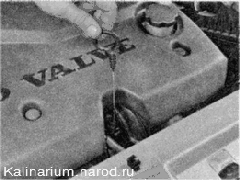
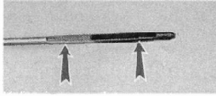
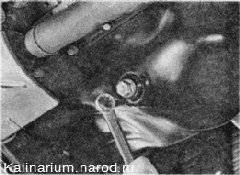
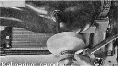
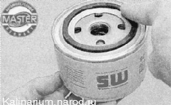
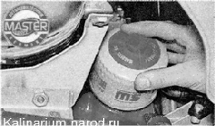
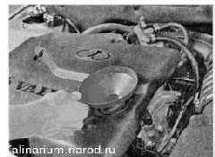

Моторное масло и масляный фильтр заменаУРОВЕНЬ МАСЛА - ПРОВЕРКА Проверку следует проводить через 10—15 минут после остановки двигателя. Последовательность выполнения 1. Подготавливаем автомобиль к выполнению работы 2. Вынимаем указатель уровня масла из направляющей трубки. 3. Протираем указатель ветошью, удаляя с него масло, после чего вставляем его в трубку до упора. 4. Вынимаем указатель. Уровень масла должен находиться в границах насечки, выполненной на конце указателя. Если уровень ниже допустимого уровня, доливаем масло. 5. По окончании проверки устанавливаем указатель на место. Первая замена масла на новом или прошедшем капитальный ремонт двигателе должна производиться через 2500—3500 км пробега, далее — через каждые 15 000 км. Объем системы смазки 3,5 л. Для более полного удаления масла его следует сливать из прогретого двигателя. Для выполнения работы необходимы: — смотровая канава или эстакада; — съемник масляного фильтра; — широкая емкость объемом не менее 4 л. Снятие 1. Подготавливаем автомобиль к выполнению работы. Если на автомобиле установлена защита картера и она затрудняет доступ к сливному отверстию, снимите защиту. 2. Накидным ключом на 17 мм ослабляем затяжку пробки сливного отверстия. 3. Устанавливаем под двигатель емкость для отработанного масла. Внимание! Выполняя следующую операцию, будьте осторожны — масло горячее! 4. Отворачиваем пробку сливного отверстия поддона картера двигателя и сливаем масло из двигателя в емкость. 5. Дождавшись полного слива масла из поддона картера двигателя, заворачиваем пробку сливного отверстия. 6. Съемником ослабляем затяжку масляного фильтра. 7. Отворачиваем масляный фильтр и снимаем его 8. Чистой ветошью тщательно очищаем на блоке цилиндров привалочную плоскость масляного фильтра. Перед установкой нового фильтра заполните его маслом на 1/2-2/3 объема. 9. Наносим чистое моторное масло на резиновое уплотнительное кольцо фильтра и заворачиваем фильтр на место. 
10. Затягиваем фильтр усилием РУК. 11. Отвернув, снимаем крышку маслозаливной горловины. Устанавливаем в горловину воронку. 12. Заливаем масло в двигатель, контролируя его уровень по указателю. 13. Заворачиваем крышку маслозаливной горловины. 14. Запускаем двигатель и убеждаемся в том, что контрольная лампа аварийного давления масла погасла и отсутствуют утечки масла изпод уплотнительного кольца масляного фильтра и пробки сливного отверстия. |